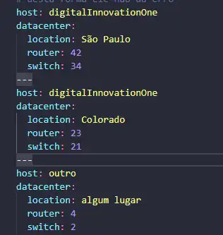
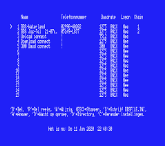

Criada em 2001, o Yaml não é apenas uma linguagem de marcação, mas sim uma linguagem de serialização de dados. O que é Serialização ? Serialização, é a técnica que permite converter objetos em bytes. Com essa conversão, esses dados podem ser salvos em disco ou enviados através de stream via HTTP, Sockets e outros.

YMODEM é um protocolo de transferência de arquivos usado entre microcomputadores conectados entre si usando modems. Foi usado principalmente para transferir arquivos de e para sistemas de quadro de avisos.